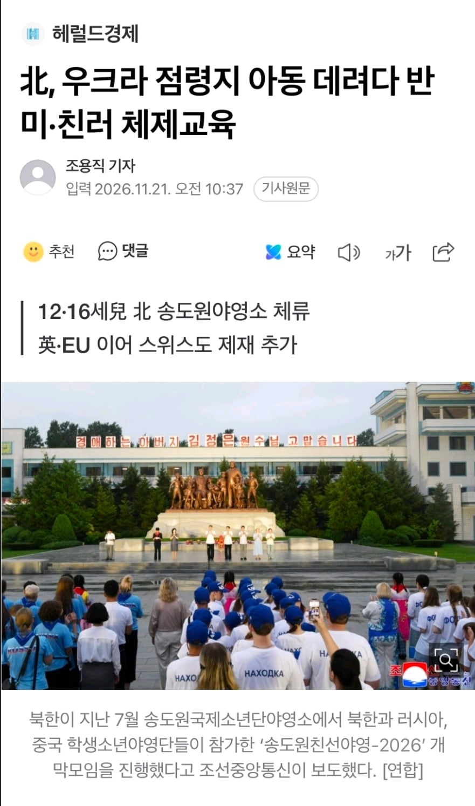

북괴, 우크라 아동 납치해 반미친러 세뇌 중
댓글
또라이들
씨발새끼
사이비 맞네ㄷㄷ
반미친 러 ㄷㄷ
아 이건 북한 이길 나라가 없긴하지;;
역시 인권따위는 좆박은 괴뢰 집단 답다 ㅋㅋㅋㅋㅋㅋㅋ
쟤네 러시아인것 같던데
그냥 동맹국끼리 평범한 교류던데
아님 세뇌교육 맞음 이건 또 어디서 들은 소리여
우크라이나 전쟁 초기부터 애들 납치해다가 러시아 국적 부여하고(러시아 말로는 구호) 세뇌교육 한다고 나왔었음
근데 왜 우크라에선 조용함?
그리고 전쟁 초기면 러시아에서 납치해서 세뇌한거지 북한이 한게 아니잖아.
납치된 애들 찾아주는 NGO도 있는데 상식적으로 조용하겠냐? 그냥 너가 몰라서 관심이 없는거지
러시아가 납치해서 러시아 내부의 수용소나 시설에 보내고 북한에도 보낸 거임
북한군이 우크라이나 전쟁 참전하면서 납치해간게 아니고
우크라가 아동납치에 대해서 조용하지 않다는 근거는 니가 찾아야지
내가 몰라서 그렇다고 주장한다면 넌 토론의 기본 자세가 안되있는 거니까 댓글은 그만 달게
아이들을 납치해다가 지구 반대편 국가 보내서 동맹국끼리의 교류라고 하면 피해당사국이나 인권단체나 국제기구가 퍽이나 북러학생교류라고 인정해주겠다
근거가 뭐냐니까 딴소리하고 있네
북한 입장에서 단순 학생교류라는 개똥같은 말에 댓글다니깐 댓글쓰는 그 순간에 수정하고 갑자기 근거타령으로 변하네 ㅋㅋㅋㅋ
https://h21.hani.co.kr/arti/world/world_general/54957.html
https://www.ytn.co.kr/_ln/0104_202512042251274824
https://youtu.be/zPvSrJ8i-uc
https://childrenofwar.gov.ua/en/
우리 핑프 개붕이를 위해 링크 가지고왔다
아니 이건 알고 있는데 북한이 세뇌했다고 우크라가 주장한게 있냐고
https://m.ytn.co.kr/news_view.php?s_mcd=0104&key=202512042251274824&pos=
여기 가도 있음 그리고 그냥 동맹국 끼리 교류라는 근거는 어디있음?
위에 올린 https://youtu.be/zPvSrJ8i-uc 이 영상이 우크라이나 사람이 미 국회에 나와서 말하는거고
우크라이나 외교부는 예전부터 강제 이주, 강제 동화에 항의했고 그쪽에서 외교적으로 계속 작업을 했으니https://www.eurointegration.com.ua/eng/news/2026/11/12/7249858/ 유럽의회에서도 겐세이 넣고 있지
그러니까 납치세뇌의 주체는 러시아잖아 북한이 아니라.
러시아의 우크라아동 납치는 이전부터 꾸준하게 제기된 사안이라 새로울 것도 없는데
저 기사에는 북한이 납치세뇌했다는 늬앙스잖아.
북한이 러시아랑 우호도 더 쌓으려고 따까리짓 하면서 납치세뇌에 하청하는거지
인간이 할 짓이 아니다 진짜
저들의 부모님들은 어떻게 됬을까ㅠ
정신나간넘들이네 ㅋㅋ
미친새끼